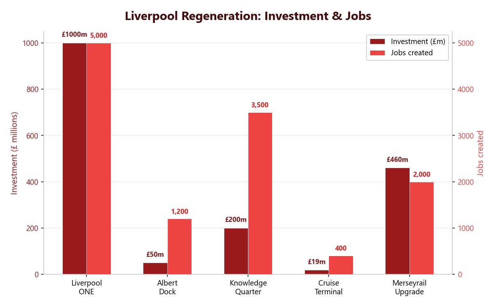

Liverpool ONE: Brownfield Regeneration
Regeneration is the process of reversing urban decline by improving buildings and infrastructure. Liverpool ONE is a prime example, built on a brownfield site that was once a bus station surrounded by derelict buildings in the city centre.
Liverpool ONE is a vibrant mixed-use shopping complex offering:
- Over 100 shops, including designer and flagship stores like John Lewis.
- 3,000 underground car parking spaces (reducing visual pollution at street level).
- 33 cafes, restaurants and bars.
- A 14-screen Odeon cinema.
- 600 apartments built close by.
- Hotels including the Hilton, and proximity to the Beatles Story museum (0.3 miles).
- Chavasse Park at its centre, providing green recreational space.
- Good public transport links, with a bus station next door.
Liverpool ONE was built on a brownfield site — a former bus station surrounded by derelict buildings. Building on brownfield land means no new green space is lost, unlike building on greenfield sites.

Anfield Regeneration
The £260 million regeneration of Anfield is a partnership between Liverpool City Council, Your Housing Group and Liverpool Football Club. The project prioritises local workforce, local supply chains and apprenticeships.
- The £1 house scheme has benefited 23 homes — houses sold for £1 on condition they are renovated and made safe to live in.
- Since 2013, nearly 400 homes have been built, over 300 refurbished and around 250 derelict properties demolished.
- Green spaces have been added, including an outdoor gym, fishing ponds and children’s play areas in Stanley Park.
- Street lighting has been upgraded and alley gates installed to reduce fly-tipping and anti-social behaviour. CCTV has reduced crime.
- 1,000 match-day jobs have been created at Anfield stadium.
- Football tourism and major events (Taylor Swift concerts generated £31 million in 2024) boost the local economy.
Integrated Transport
An integrated transport system connects different forms of transport so passengers can move easily between them. Liverpool’s system includes:
- Metro Card — a pre-paid travel card (formerly the Walrus Card) that works across buses, Merseyrail trains, ferries and e-scooters in the Liverpool Metropolitan area.
- Merseyrail — a rail network with three lines covering Merseyside.
- Buses — frequent services (every 10 minutes), with Wi-Fi, charging points and designated bus lanes for faster travel.
- Liverpool John Lennon Airport — connecting the city to European destinations.
- E-scooters and Mersey Ferry — additional options accessible via the Metro Card.
As Liverpool’s opportunities improve, its population is growing again. This leads to urban sprawl — the city spreading into the rural-urban fringe. Commuter settlements (e.g. Aughton near Ormskirk) are growing as people live outside the city and travel in for work.
Positives: New jobs in construction, new social facilities, improved transport infrastructure, attractive environments for homes near rural areas.
Negatives: Loss of green space and biodiversity, increased flood risk from impermeable surfaces, increased traffic congestion from commuters, rising house prices that exclude local residents on low incomes.
Urban Sustainability in Liverpool
Liverpool City Council has set an ambitious target to be net zero by 2030. The council has already cut 840,000 tonnes of CO₂ since 2005 through measures including:
- Insulating homes to reduce heating use.
- Increasing bus and cycle lanes to encourage public transport and active travel.
- Investing in renewable energy sources.
- Investing £4 million in tree planting across the city.
- Installing heat pumps in council buildings.
- Creating fleets of electric and hydrogen vehicles.
Liverpool City Council has cut 840,000 tonnes of CO₂ since 2005 and aims to reach net zero by 2030. Around 40% of the city’s emissions come from homes, so improving housing insulation is a key priority.
Liverpool also runs a three-bin recycling system (blue, purple and green bins). Liverpool FC recycles 55% of its waste and has partnered with SC Johnson to turn recycled plastic bottles into cleaning product packaging.
Since 40% of Liverpool’s emissions come from homes, sustainable housing is critical. Features include wall and loft insulation to reduce heat loss, double or triple glazing, solar panels (PV), LED lighting, rainwater harvesting systems and energy-efficient boilers or heat pumps. These measures reduce both energy bills and carbon emissions.